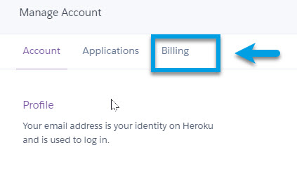

Welcome to The Diabetic way
For full Website content visit The Diabetic Way.

Part 2 Setting up a Heroku Account for Nightscout
| Note! |
| You will have already needed to have done Part 1 Setting up Github Account for Nightscout. To be able to continue. |
Now we are going to create a Heroku account.
1. First you will need go to Heroku web page and create an account for yourself Click Here or: https://signup.heroku.com And enter all your account details.
First Name, last name, email address
“Role” and “Primary development language” can be anything, but “Hobbyist” and “Node js” are the most appropriate choices. And click on Create your free Account
2. Now go to verify your account via the link in the verification email that’s sent to you, and then set your password.

3. Click Later for Secure your Account this can be done later!

4. Your Heroku page will open, now click on your profile picture, in the top right corner, and select Account Settings

| Note! |
| Unless you willingly select billable features, your credit card information is only used for verifications and you will not be charged anything. Worst case you’ll be charged £0.00 |
5. Click on Billing

6. Click on your credit card details

7. Enter your credit card Details and click Save Details

You should now have 2 web pages open: Github and Heroku Leave them open.
Heroku

Github

Now we need to do
Part 3: Set up a Atlas Account